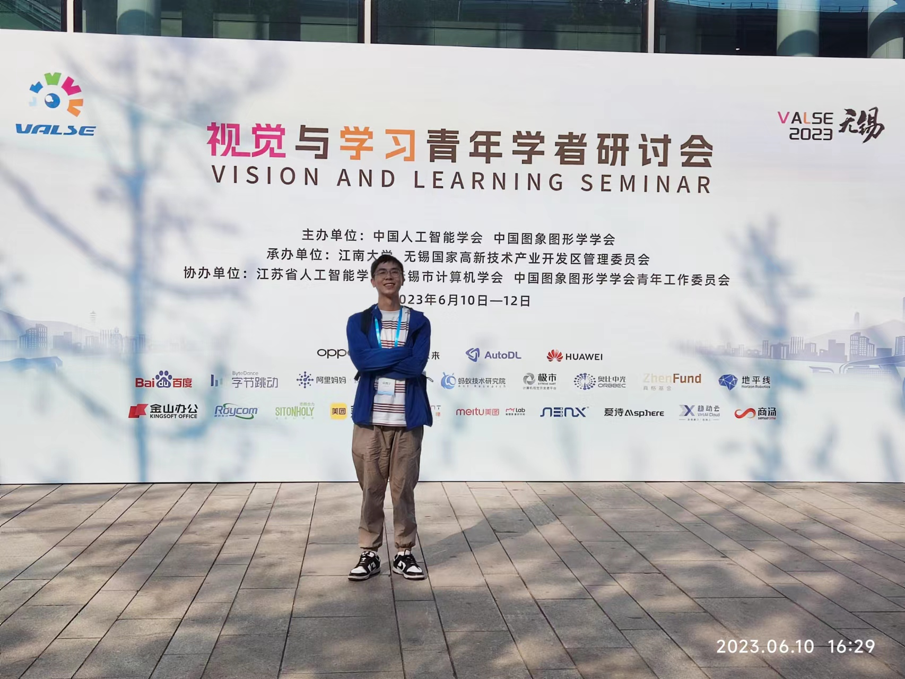

Kaining Ying
拍摄于VALSE无锡

CS Master@ZJUT supervised by Prof. Zhenhua Wang.
Email: kaining[dot]ying[dot]cv[at]gmail[dot]com
Google Scholar | GitHub
Research Interests
- Multimodal-LLMs
- Segment Anything
- Object Detection & Instance Segmentation
- Human-centric Interaction Understanding
Education
Publications
* indicates equal contributions, # indicates corresponding authors
CTVIS: Consistent Training for Online Video Instance Segmentation
Kaining Ying*, Qing Zhong*, Weian Mao, Zhenhua Wang#, Hao Chen#, Lin Yuanbo Wu, Yifan Liu, Chenxiang Fan, Yunzhi Zhuge, Chunhua Shen. ICCV 2023
PAPER
CODE
DEMO
ISDA: Position-Aware Instance Segmentation with Deformable Attention
Kaining Ying, Zhenhua Wang#, Cong Bai, Pengfei Zhou. ICASSP 2022 Oral
PAPER |
CODE |
VIDEO
Human-to-Human Interaction Detection
Zhenhua Wang, Kaining Ying#, Jiajun Meng, Jifeng Ning, Cong Bai. Preprint 2023
PAPER
Self-supervised Enhancement for Named Entity Disambiguation via Multimodal Graph Convolution
Pengfei Zhou*, Kaining Ying*, Zhenhua Wang, Dongyan Guo, Cong Bai#. TNNLS 2022
PAPER |
CODE
Human Interaction Understanding with Consistency-Aware Learning
Jiajun Meng, Zhenhua Wang#, Kaining Ying, Jianhua Zhang, Dongyan Guo, Zhen Zhang, Qinfeng Shi, Shengyong Chen. TPAMI 2023
PAPER |
CODE
Professional Service
Reviewer of TMM, ICME 2023 and ACM MM 2023.
Honors and Awards